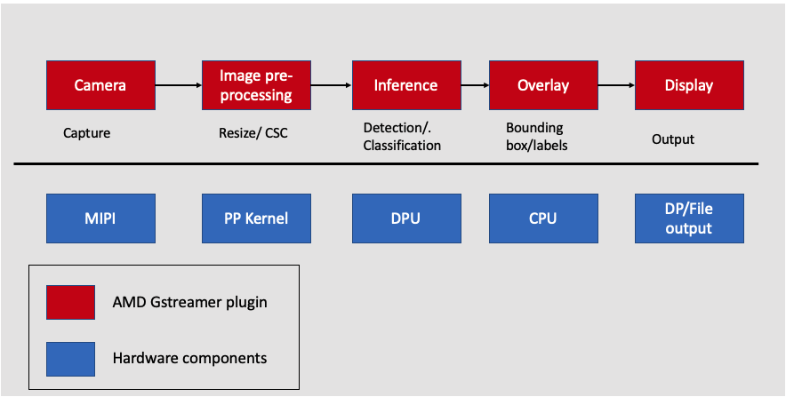

# Version: Vitis 2022.1
Kria Vitis Acceleration¶
Kria K26 SOM is the fastest path to achieving whole application acceleration at the edge. The K26 SOM combines high AI performance with the adaptability necessary to keep up with evolving algorithms and sensor requirements. It’s based on the UltraScale+ MPSoC technology, similar to the ZCU104 evaluation board.
Important Pre-requisite: KV260 getting started guide sets up all the necessary hardware required for this tutorial.
Objective¶
The Kria Vitis acceleration tutorial aims to enable software application developers, system software designers, and system hardware designers by providing the following.
An end-to-end Kria Vitis Application development flow.
Introduction to Kria hardware development flow
Introduction to Kria application development flow
Smart camera Application¶
KV260 Vision AI Starter Kit introduces users to the pre-build accelerated applications. The pre-built applications for AI and SW developers, give users a head start to develop their target end applications. Smart camera is one of the pre-built applications. This tutorial builds the smart camera application from the ground up, which teaches the user an end-to-end Kria Vitis Application development flow. The Smart camera implements face detection with network and display functionality. It has built-in machine learning for applications such as pedestrian detection, face detection, and people counting with local display and RTSP streaming. The Smartcam application leverages the Gstreamer, a pipeline-based multi-media framework that links various media processing systems to create workflows. Vitis Video Analytics SDK leverages the ease of use of the GStreamer framework to build seamless streaming pipelines for AI-based video and image analytics and several other solutions without needing any understanding of FPGA or other development environment complexities. VVAS provides several hardware accelerators for various functionalities and highly optimized GStreamer plugins meeting most of the requirements of Video Analytics and transcoding solutions. The below figure gives a high-level system architecture for the Smartcam Application. The Smartcam application workflow is as follows.

Input camera: Streaming data comes over the MIPI camera, which is captured and sent to the next Gstreamer pipeline. The capture is performed by the VVAS plugin.
AI Pre-processing: The captured frames are sent to the image pre-processing step, where the input image can be pre-processed before inference. The pre-processing is performed by the pre-processing kernel, which is a hardware component.
AI Inference: After pre-processing, the frame is sent for inference which is performed on the DPU, which is a hardware component.
AI Rendering: Next step is to overlay the inference, which is performed on the CPU by the VVAS plugin.
Output Display: Finally, VVAS presents various options to output the results, like rendering the output with the bounding boxes on the screen, saving the output to the local disk, etc.
Tutorial Details¶
This tutorial builds the smart camera application from the ground up. It is divided into two steps.
Image Resizing Application:
In this step, we will build an Image Resizing Application that leverages the Vitis Vision library and control it using the AMD VVAS Plugins. The Image resizing application implements a resize kernel on the FPGA, which reads a input image from the MIPI camera and converts it to a BGR format of user-defined size. VVAS running on the CPU reads the resize output and uses the VVAS file output plugin to write to the disk. The Pyuv player is used to view the BGR output.
ML Inference:
In this step, we will extend the Image resizing hardware pipeline with a DPU Inference unit to perform an ML Inference to complete the smartcam application. Instead of sending the resized output to CPU to write to the disk, in this step we will send the resizing output to the DPU Engine on the FPGA to perform the ML Inference. Once the inference is, the VVAS running on the CPU uses the VVAS overlay, kmssink plugins to perform the ML Overlay and display operations.
Download the files¶
Download the tutorial files from the Server link into the tutorial_1 directory
mkdir tutorial
mv kria_accel_flow_22_1.zip tutorial
cd tutorial
unzip kria_accel_flow_22_1.zip
Software Setup¶
The tutorial requires the following software setup:
22.1 Vitis and Vivado Tools
22.1 Petalinux Tools, refer to Petalinux setup
Download and install the Pyuv Player
Download and install Balena Etcher
Hardware requirements¶
KV260 Board and power supply.
A microSD card for transferring the boot image
A USB-A to micro-B cable (a.k.a. micro-USB cable), which supports data transfer.
An IAS Camera Module for capturing the image
A DisplayPort/HDMI cable to connect to a monitor
Ethernet cable for required internet access.
Next step¶
The next step is Vitis Acceleration Flow overview